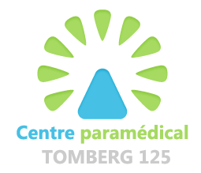

Vous pouvez me contacter au +32 470 58 12 23 ou à l’adresse email emeline.lucas.psychologue@gmail.com et venir me rencontrer à l’une de deux adresses suivantes :

Cabinet paramédical
Tomberg, 125
1200 Bruxelles
www.paramedical-tomberg125.be
ASBL beSense
Château des Corrées
Avenue Adrien Stas, 9
1350 Orp-Jauche
www.besense.be
Mes agréments
- Agréée par la commission des psychologues (vous permettant d’obtenir un remboursement partiel de la part de votre mutuelle pour les consultations thérapeutiques)
- Membre de la fédération belge des psychologues (FBP)
- Membre de l’Union professionnelle des psychologues cliniciens francophones (UPPCF)
- Membre de l’AEMTC (réseau des psychologues d’orientation cognitivo-comportementale en Belgique)
- Nommée collaboratrice scientifique de l’Université Libre de Bruxelles depuis 2016
Mes publications et interventions presse
- Co-auteur du livre « Bien-être et diversité des situations de travail » (Tome 1) aux éditions L’Harmattan
- Communication orale sur les témoins de harcèlement moral au travail lors du congrès 2016 de l’Association Internationale de Psychologie du Travail de Langue Française (AIPTLF)
- Intervenante pour l’émission « le travail peut-il nous rendre malade ? » (Question à la Une – RTBF)
- Avis d’expert pour la DH : édition du 16 mars 2017 sur le harcèlement au travail
- Intervenante radio pour l’émission « Faut-il sanctionner plus sévèrement l’agressivité au travail ? » (La Première – RTBF)
- Interview pour le journal En Marche (Mutualité Chrétienne, 6 août 2015) sur le harcèlement moral au travail